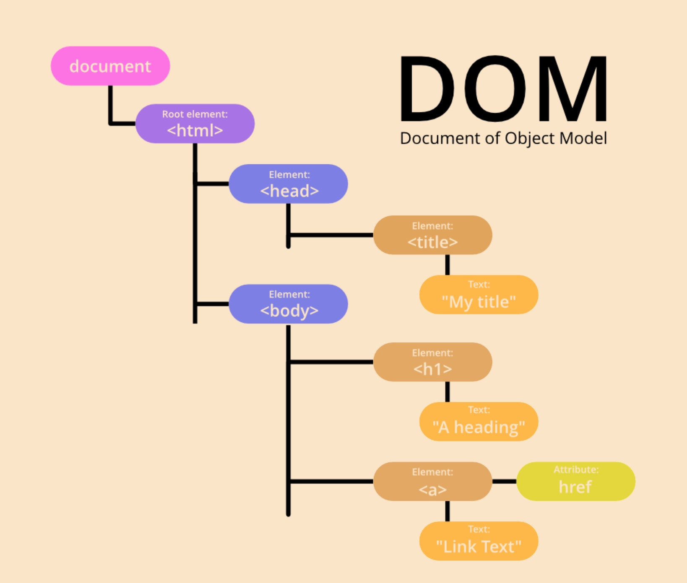
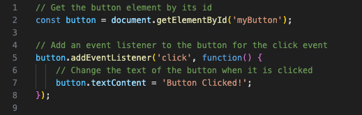

HTML, CSS and JavaScript are like a family of three building a home (this is going to be a rather old fashioned comparision so plz don't be offended). HTML is the father - He does the heavy lifting and plans out the blueprints for how the house would flow; CSS is the mother - Once the house is built, she does the interior decorating and makes everything look pretty; JavaScript is the teenage nerdy son who finds ways to make the house a 'smart' one giving it some new flashy features. The mother and father have been around for a long time and built the house before their son came along, the house is by no means lacking in functionality but if it wasn't for the son, the house would, at least by todays standards, be less interesting. Website design is the same, without JavaScript it the website would be able to meet most standard needs but with the addition of JavaScript, things become more interactive, efficient and interesting!
Control Flow refers to the order that the code is run. Think of lines of code like lines in a book - You typically read the content from the top to the bottom and by default, this is the same for the way computers execute code.
This default flow is able to be manipulated via special structures within the code. An example of this is a 'loop'. The name is quite self-exlpanatory, if you have a section of code that you
want to run more than once, you are able to nest it in a loop. Loops are used over a simple 'copy-paste' as it makes the code much easier to maintain, read and update. Imagine you are taking notes
for a friend and you realise that one section is quite information-heavy and will take a few re-reads to comprehend - instead of wasting page space and rewriting the section, you could simply add a
note for your friend and say "you might want to re-read this a few times", that seems more reasonable, doesn't it?
These loop structures typically have two main components, a condition and the code that you want to loop. The condition tells the computer, "While this condition is true, run this code, once
it is false, quit the loop and revert to the default flow". Without a condition, the computer will loop the code forever and chances are we don't want that!
I previously mentioned HTML being the father who plans out the blueprints of the house. Well, HTML is much like the blueprint of the website, the DOM takes these blueprints and translates it into something that the son, JavaScript, can read and and implement his changes to. The Document Object Model (DOM) is a programming interface which represents the structure of an HTML Document like a tree where each branch represents a different part of the document. JavaScript then is able to look at the tree and see which branch it wants to access or change.
Source: https://www.geeksforgeeks.org/what-is-document-object-in-java-dom/
Suppose you have a button element with the id "myButton" in your HTML document, and you want to change its text when it is clicked. You can interact with the DOM using JavaScript.

In this example, we first retrieve the button element from the DOM using getElementById. Then, we use addEventListener to listen for a click event (when the user clicks) on the button.
When the button is clicked, the anonymous function changes the text content of the button to 'Button Clicked!'. This showcases how JavaScript can interact with the DOM to dynamically
modify elements on a webpage based on user actions.
Arrays and Objects are both fundamental data structures in JavaScript, but they serve different purposes and have distinct characteristics:
In summary, arrays are best used for ordered collections of data, while objects are ideal for representing entities with properties and behaviors through key-value pairs. Arrays use numerical indices for access, while objects use keys for retrieval.
A function is like a recipe or a set of instructions that you can give a name to. Just like a recipe tells you how to make a cake step by step, a function tells the computer how to perform a specific task or operation. When you want the computer to do something specific, you can write a function to define that task, give it a name, and then you can ask the computer to execute that function whenever you need that task to be done. It helps you organize your code and avoid repeating the same instructions multiple times. So, a function is like a handy tool that you can create and reuse whenever you want to accomplish a particular job in your program.